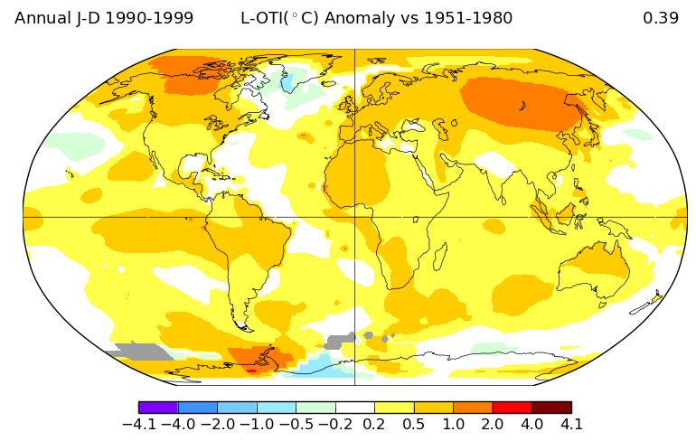

1980s

1990s
2000s

This map displays average global temperature anomalies per decade. Each marker is proportional to the temperature increases per latitude and is color coded by decade. Increasing circle sizes indicate that temperatures are increasing.
These heat maps display average annual global temperature anomalies per decade in relation to corresponding 1951-1980 means. There is clear trend of increasing temperatures across the globe.